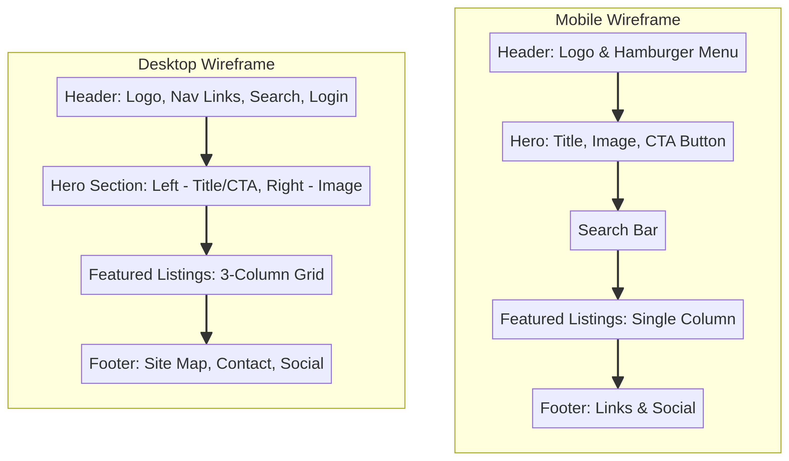

Site Name
Green Oasis Community Garden
Reasoning: This name reflects a focus on urban gardening, community engagement, and environmental sustainability. It emphasizes the garden as a sanctuary and a central point for local residents to connect with nature and each other.
Optional Domain: greenoasisgarden.org (or .com)
Site Purpose
The Green Oasis Community Garden website is a three-page informational platform designed to promote urban gardening, manage community engagement, and provide a digital catalog of the garden's flora. It aims to provide a natural and meaningful context for technical components like data fetching and local storage, while emphasizing accessibility and usability for the local community.
User Scenarios
Scenario 1: Plant Enthusiast
Question: "I'm looking for specific plants that grow well in partial shade. Can I find care instructions and species information here?"
Answer: Yes, the Plant Directory features a dynamic catalog that retrieves data from a JSON source. Users can filter plants by sun requirement and click on plant cards to open modals with detailed care instructions and high-quality images.
Scenario 2: Community Volunteer
Question: "I want to get involved in the garden as a volunteer. How do I sign up and will the site remember my preferences?"
Answer: The 'Join the Garden' page includes a comprehensive volunteer application form. Additionally, the site uses Local Storage to save 'Favorite Plants' or remember form progress, ensuring a personalized and convenient experience.
Page Structure
Home (index.html): Introduces the garden's mission, impact, and highlights. Features a hero section and attribution links.
Plant Directory (plants.html): Technical showcase using Fetch API to display 15+ plant species with filtering and modal dialogs.
Join the Garden (join.html): Focuses on participation with a volunteer form, local storage integration, and an interactive map.
Color Scheme
Primary Color
Hex: #228B22 (Forest Green)
Usage: Headings, primary buttons, navigation, and key accents.
Rationale: Represents growth, nature, and the core identity of the community garden.
Secondary Color
Hex: #F0E68C (Khaki)
Usage: Background elements and highlights.
Rationale: Evokes an earthy, natural feel that complements the garden theme.
Accent Color
Hex: #4682B4 (Steel Blue)
Usage: Links and interactive elements.
Rationale: Provides contrast and represents the water and sky essential for the garden.
Typography
Montserrat
Type: Sans-serif (Modern & Clean)
Usage: All headings (H1, H2, H3) and titles.
Rationale: Establishes a strong visual hierarchy and modern brand identity.
The quick brown fox jumps over the lazy dog
Open Sans
Type: Sans-serif (Highly Readable)
Usage: Body text and long-form content.
Rationale: Ensures comfort for users reading plant descriptions and garden news.
The quick brown fox jumps over the lazy dog
Lato
Type: Sans-serif (Friendly)
Usage: Buttons and navigation links.
Rationale: Maintains a consistent and inviting user experience for interactive elements.
The quick brown fox jumps over the lazy dog
Wireframe
Below is the wireframe design for the Green Oasis Community Garden home page:

Layout Description
Mobile View: Single-column layout with a hamburger menu, hero section, and vertical plant cards.
Desktop View: Multi-column layout with full navigation, 3-column plant grid, and side-by-side content sections.